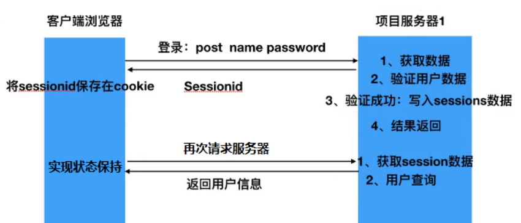

我们知道HTTP是一种无状态的协议，为了分辨链接是谁发起的，需自己去解决这个问题。而且一旦数据交换完毕，客户端与服务器端的连接就会关闭，再次交换数据需要建立新的连接。这就意味着服务器无法从连接上跟踪会话。导致有些情况下即使是同一个网站每打开一个页面也都要登录一下。而Session和Cookie就是为解决这个问题而提出来的两个机制。
同样的Token也能解决这个问题，它们之间只是一个说法的差别，其实做的事情都是一样的。
Cookie
实际上是一小段的文本信息是访问某些网站后在本地存储的一些网站相关信息，下次访问时减少一些步骤。更准确的说法是：Cookie是服务器在本地机器上存储的小段文本信息并随每一个请求发送至同一服务器，是在客户端保持状态的方案。主要包括：名字，值，过期时间，路径和域。路径与域一起构成Cookie的作用范围。
会话Cookie和持久Cookie
若不设置过期时间，则表示这个 cookie 的生命期为浏览器会话期间，关闭浏览器窗口，cookie就消失。这种生命期为浏览器会话期的cookie被称为会话cookie。会话cookie一般不存储在硬盘上而是保存在内存里，当然这种行为并不是规范规定的。若设置了过期时间，浏览器就会把cookie保存到硬盘上，关闭后再次打开浏览器，这些cookie仍然有效直到超过设定的过期时间。存储在硬盘上的cookie可以在浏览器的不同进程间共享。这种称为持久Cookie。
Session
它存在服务器的一种用来存放用户数据的类HashTable结构，是另一种记录客户状态的机制，不同的是Cookie保存在客户端浏览器中，而Session保存在服务器上。客户端浏览器访问服务器的时候，服务器把客户端信息以某种形式记录在服务器上。这就是Session。客户端浏览器再次访问时只需要从该Session中查找该客户的状态就可以了。
session的创建
当程序需要为某个客户端的请求创建一个session时，服务器首先检查这个客户端的请求里是否已包含了sessionId，如果已包含则说明以前已经为此客户端创建过session，服务器就按照sessionId把这个session检索出来使用（检索不到，会新建一个），如果客户端请求不包含sessionId，则为此客户端创建一个session并且生成一个与此session相关联的sessionId，sessionId的值是一个既不会重复，又不容易被找到规律以仿造的字符串，这个sessionId将被在本次响应中返回给客户端保存。
当服务器为用户建立一次会话，可以在用户授权成功时给他一个唯一的cookie。当一个用户提交了表单时，浏览器会将用户的SessionId自动附加在HTTP头信息中，服务器通过SessionId作为key，读写到对应的value，这就达到了保持会话信息的目的。
如果客户端禁用了cookie，通常有两种方法实现session而不依赖cookie：URL重写，就是把sessionId直接附加在URL路径的后面；表单隐藏字段。
Session共享
对于多网站(同一父域不同子域)单服务器，我们需要解决的就是来自不同网站之间SessionId的共享。由于域名不同(aaa.test.com和bbb.test.com)，而SessionId又分别储存在各自的cookie中，因此服务器会认为对于两个子站的访问,是来自不同的会话。解决的方法是通过修改cookies的域名为父域名达到cookie共享的目的,从而实现SessionId的共享。带来的弊端就是，子站间的cookie信息也同时被共享了。
Cookie和Session的区别
Cookie和Session都是会话技术，Cookie是运行在客户端，Session是运行在服务器端。Cookie有大小限制以及浏览器在存cookie的个数也有限制（单个cookie保存的数据不能超过4K，很多浏览器都限制一个站点最多保存20个cookie），Session是没有大小限制和服务器的内存大小有关。Cookie有安全隐患，通过拦截或本地文件找得到你的cookie后可以进行攻击。Session是保存在服务器端上会存在一段时间才会消失，如果session过多会增加服务器的压力。
Session的弊端以及Token的引入
弊端：
服务器压力增大：通常 session 是存储在内存中的，每个用户通过认证之后都会将 session 数据保存在服务器的内存中，而当用户量增大时，服务器的压力增大。
CSRF 跨站伪造请求攻击：session 是基于 cookie 进行用户识别的, cookie 如果被截获，用户就会很容易受到跨站请求伪造的攻击。
扩展性不强

token，注册登录 -> 服务端将生成一个 token，并将 token 与 user 加密生成一个密文 -> 将 token + user + 密文数据 返回给浏览器 -> 再次访问时传递 token + user + 密文数据，后台会再次使用 token + user，生成新密文，与传递过来的密文比较，一致则正确。就是 token 从设计上必须通过 get 参数或者 post 参数提交，一般是不允许保存在cookies 当中的，容易产生 CSRF 漏洞。
token 与 session 的不同主要在①认证成功后，会对当前用户数据进行加密，生成一个加密字符串 token，返还给客户端（服务器端并不进行保存）
②浏览器会将接收到的 token 值存储在 Local Storage 中，（通过 js 代码写入 Local Storage，通过 js 获取，并不会像 cookie 一样自动携带）
③再次访问时服务器端对 token 值的处理：服务器对浏览器传来的 token 值进行解密，解密完成后进行用户数据的查询，如果查询成功，则通过认证，实现状态保持，所以，即时有了多台服务器，服务器也只是做了 token 的解密和用户数据的查询，它不需要在服务端去保留用户的认证信息或者会话信息，这就意味着基于 token 认证机制的应用不需要去考虑用户在哪一台服务器登录了，这就为应用的扩展提供了便利，解决了 session 扩展性的弊端。
Cookie 和 Token 的区别
token 和 cookie 一样都是首次登陆时，由服务器下发，都是当交互时进行验证的功能，作用都是为无状态的 HTTP 提供的持久机制。
token存在哪儿都行，localstorage （在 HTML5 中，新加入了一个 localStorage 特性，这个特性主要是用来作为本地存储来使用的，解决了 cookie 存储空间不足的问题）或者 cookie。
对于 token 而言，服务器不需要去查看你是谁，不需要保存你的会话。当用户 logout 的时候 cookie 和服务器的session 都会注销；但是当 logout 时候 token 只是注销浏览器信息，不查库。
token 优势在于，token 由于服务器端不存储会话，所以可扩展性强，token 还可用于 APP 中。（可以避免 CSRF 攻击，可以是无状态的，可以在多个服务间共享）。